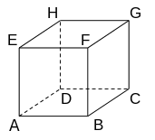
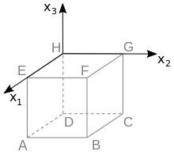

Bayerisches Abitur in Mathematik 2016¶
Aufgabe
Betrachtet wird der abgebildete Würfel \(ABCDEFGH\).
Die Eckpunkte \(D\), \(E\), \(F\) und \(H\) dieses Würfels besitzen in einem kartesischen Koordinatensystem die folgenden Koordinaten: \(D(0|0|-2)\), \(E(2|0|0)\), \(F(2|2|0)\) und \(H(0|0|0)\).
Zeichnen Sie in die Abbildung die Koordinatenachsen ein und bezeichnen Sie diese. Geben Sie die Koordinaten des Punkts \(A\) an.
Der Punkt \(P\) liegt auf der Kante \([FB]\) des Würfels und hat vom Punkt \(H\) den Abstand \(3\). Berechnen Sie die Koordinaten des Punkts \(P\).
Lösung zu Teil a
Der Punkt \(H\) liegt im Ursprung des Koordinatensystems. Des Weiteren befindet sich der Punkt \(E\) auf der positiven \(x_1\)-Achse und \(D\) auf der negativen \(x_3\)-Achse. Da die \(x_2\)-Koordinate von \(F\) positiv ist, folgt, dass \(G\) sich auf der positiven \(x_2\)-Achse befindet. Das Koordinatensystem kann dann wie im folgenden Bild eingezeichnet werden.
Die Koordinaten von \(A\) ergeben sich somit zu \((2|0|-2)\).
Auf der Basis der Vektoren von \(H\) nach \(D\) und \(E\) erhält man diese Ergebnis auch mit Hilfe von Sage.
Lösung zu Teil b
Der Punkt \(P\) kann als Schnittpunkt der Kante \([FB]\) mit einer Kugel um \(H\) mit Radius \(3\) bestimmt werden. Die Kante wird durch die Gleichung
parametrisiert. Des Weiteren erfüllt die Kugel die Gleichung
Wird die Gleichung der Kante nun in die Kugelgleichung eingesetzt, erhalten wir
was sich nach \(\lambda^2\) auflösen lässt:
Formal gibt es für die Gleichung die beiden Lösungen \(\lambda_1=+\frac{1}{2}\) und \(\lambda_2=-\frac{1}{2}\). Da der zur Kante gehörende Parameter nur Werte zwischen \(0\) und \(1\) annehmen kann, kommt nur die Lösung \(\lambda=+\frac{1}{2}\) in Frage. Die Koordinaten von \(P\) erhalten wir, indem der Parameter in die Kantengleichung eingesetzt wird:
Der Punkt \(P\) hat also die Koordinaten \((2|2|-1)\).
Alternativ können wir den Schnittpunkt auch mit Sage bestimmen: